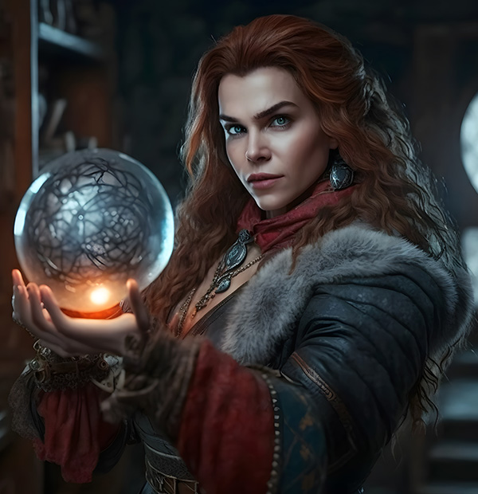
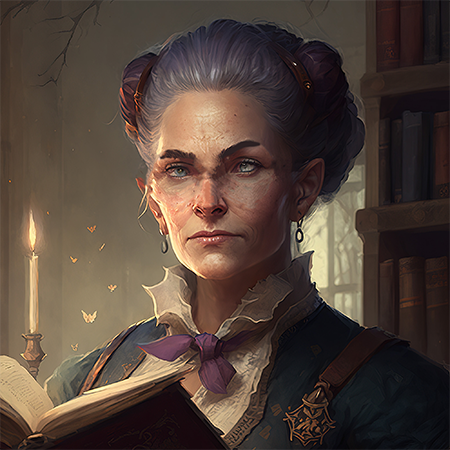

Marlys is the main character of Secrets of the Sorcerers. She's in her late 20s and is the High Sorcerer of the
Goldenvalley region. Her sorcery awakened when she was 16 years old (see the short story, "Revenge, Denied"). Appalled
by the cruel way sorcerers were trained, she froze the sorcerers in her vicinity in time. In the intervening years, she
has gathered another group of sorcerers and championed a more humane way to train sorcerers. When a relative of her
predecessor freezes three of the Goldenvalley sorcerers in retaliation, Marlys has no choice but to gather a group of
sorcerers and go on a quest to find the Library of Sorcery, where she hopes to find the appropriate spells to release
her friends.
Serena
One of three sorcerers accompanying Marlys on her quest to find the Library of Sorcery,
Serena is in her early 20s. She comes from a family of bookbinders and is the most well-read of the
sorcerers. She developed a spell that allows her to read quickly. She has read numerous spell books and has a wealth of
knowledge in sorcery as a result.
Tir
One of three sorcerers accompanying Marlys on her quest to find the Library of Sorcery,
Tir is a transgender man, 19 years old. He is a skilled sorcerer, and enthusiastic. His specialty is lighting spells. He is quick with a compliment or a witty remark.
Rochelle
One of three sorcerers accompanying Marlys on her quest to find the Library of Sorcery,
Rochelle is a sorcerer in her early twenties. She is strong, and can handle any number of weapons. She also tends to speak her mind.

Nessa
Nessa is a sorcerer in her early 20s, and niece of the sorcerer who Marlys froze in time (Thorne). Nessa freezes four of
Marlys's friends in retribution, and refuses to release them. Marlys then resolves to try to find the Library of Sorcery
to obtain a spell that will help release her friends from Nessa's spell. However, Nessa also decides to journey to the
Library of Sorcery, to try to block Marlys's efforts. (Nessa also appears in the second novel, Clash of the Sorcerers.)

Thorne
Thorne is referred to in Secrets of the Sorcerers, but is not an active character until Clash of the Sorcerers.
Thorne was High Sorcerer of Goldenvalley at the time Marlys became a sorcerer.
Marlys time-bound her for 12 years because of her harsh methods.
Marlys then assumed the role of High Sorcerer.
Once freed from the time-bind, Thorne wants her old title and responsibilities back.,
but Marlys wishes to retain her position.
This conflict is central to the Clash of the Sorcerers novel.